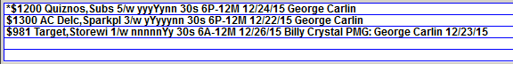

Spots Screen Options
Directly under the Vehicle dropdown are various options that control what is displayed on the Spots screen. The different views are explained below.
- The calendar dropdown is where you can either enter the date of the week you wish to view, or select the week from the calendar by clicking it.
- The arrows to either side of the date will advance the week or go back to a prior week.
- The start time of the first avail is shown next to the calendar dropdown.
- Press the magnifying glass icon to change the size of the spot/avail information. Your chosen preference is saved and used each time when accessing the Spots screen.
- More: The options available in the “More” dropdown affect what spot information you see on the Spots screen.
- None: When the default is left to None, you will see the time, avail name, spot length, advertiser and product for each spot.
- Price: Will place the spot price to the left of the spot length.
- Region: Will place the region name for any split network buys to the left of the spot length. If no region exists, ??? will appear to the left of the spot length.
- Instruction #: Will place the Rotation Instruction number assigned to copy to the left of the spot length
- Cart #: Will place the Cart to the left of the spot length. If a Cart does not exist, ??? will appear to the left of the spot length
- ISCI: Will place the ISCI to the left of the spot length. If an ISCI does not exist, ??? will appear to the left of the spot length
- Creative Title: Will place the Creative Title assigned to copy to the left of the spot length. If a Creative Title does not exist, ??? will appear to the left of the spot length
- Daypart: The daypart days and times will be shown to the left of the spot length. (Note: For spots on sports vehicles, the event number will be shown.)
- View: The Spots Screen defaults to a weekly view, but that view can be changed to a 24 hour view by selecting “Daily” (the Daily View is also the default view when the system is designated as being used for a Radio Station.) There is more information about the Daily view in a later section of this document. If a spot is selected on the Spots screen, an additional option labeled “Single” will appear in the View field. The “Single” view when selected shows only the spots for the selected advertiser, as shown below. The spot time, line number and length are shown for each spot.
- Highlight: When you click on a spot, certain characteristics will be highlighted. This field controls what will be highlighted
- Same advt: All the spots from the same advertiser will be highlighted. Spots from the same contract will be highlighted in pink and spots from the same advertiser but from a different contract will be highlighted in magenta.
- Same Prot’n: This will highlight all spots with the same Product Protection code.
- Conflict Chk: This will highlight any spots that are in conflict with one another due to a Product Protection conflict, time separation, etc.
- Split Netwk: This will highlight all spots on Split Network contracts.
- Work Area: This determines what will be displayed in the Work Area.
- Missed Area: This determines what will be displayed in the Missed Area, which can display missed spots, manually scheduled contracts that spots can be created from, cancelled spots, and hidden spots.
- Missed Reason: This is the Missed Reason that will be assigned to a spot placed in the Missed Area or dragged onto a missed reason.
- Cancel Reason: This is the Cancel Reason that will be assigned to a canceled spot.
Viewing Avails and Spots
To view the avails and spots for a vehicle, select the vehicle from the dropdown in the upper left corner of the screen, then select the week to work in from the calendar dropdown by clicking the week on the calendar or by manually typing in a date.
By default, the main section of the screen lists seven days across, with each day’s filled and unsold avails shown below the date in a grid. (There is also a daily view available that shows a single day view instead of a seven day view, and when the system is set to the “Radio Station” setting on the “System Used For” option in the Traffic Site Options->General tab, the Spots screen will default to the daily view.)
On the Spots screen, dates in the past appear in red. If the final log has been generated for a date in the future, the date will appear in magenta. If a date is in the future but the final log has not been generated for it yet, the date will appear in blue. If a day has no inventory defined for it, it will have a yellow background to distinguish it from days with inventory, which have a white background.
In the grid area, the avail time and avail name appear above either a green unit/second open avail (when there is available inventory for the break), or a spot that shows the spot length, advertiser, product, and daypart.
An example of a break with available inventory (in this example, 4 units or 120 seconds):
The same break with a 30 second spot booked into it:
A red dot to the left of a spot indicates that a comment is attached to the spot.
To view the comment, hold the right mouse button down when clicking on the spot. The comment appears in the yellow area, as shown in the example below.
Spot Color Coding
- Any spot in black is a non-hidden line spot
- Any spot in blue is from a hidden line of a package
- Any spot in italics is a makegood
- Any spot with a strikethrough is an outside
- Additional color coding explanation appears when clicking the key icon
Spot Information Pop-up box
When mouse-clicking on a spot in the schedule area, the Missed Area, or the Work Area, the system will bring up a pop-up box that shows more detailed information about the contract the spot comes from in the upper left corner of the screen, as shown below. The system will also highlight other spots from the same contract and advertiser.
From this pop-up box, clicking the contract number (in the upper left corner) will open the contract on the Orders screen.
To close the pop up box, either click the Close button or click the underlined spot a second time.
Ordered Package Vehicles on the Pop-up box
If the spot selected is part of a package, you will see “Hidden” in the Package field on the Line Detail information. You can see the other vehicles that make up this package by clicking on the down arrow.
Ordered Days on the Pop-up box
When the Calendar dropdown arrow is clicked on the Spot detail pop-up, a calendar will appear with green days for the valid schedule days, red days for days outside the ordered daypart, and blue days for days within the ordered date range but outside of the ordered daypart.
Missed Area
The area in the lower right corner of the screen is called the Missed Area. By default, the Missed Area shows the missed spots for the vehicle/week selected. Spots may be in missed because of a variety of reasons: the week could have been closed at the time of scheduling; there might have been no available inventory to schedule into; product protection conflicts could have prevented the spot from scheduling into the available inventory; the spot could have been manually moved into Missed; plus numerous other reasons.
The system defaults to showing you only those spots missed in the vehicle you are currently viewing.
You can view all of the spots in the Missed Area individually on separate lines or by contract lines by clicking on the Spots/Contract toggle on the left side of the Missed Area.
Spots View
The following information is shown for each spot:
Advertiser: The advertiser abbreviation is used.
Product name: if defined.
If the "Short Title" feature is used, then the Short Title is shown instead of the advertiser/product.
Spot count: For weekly buys, it shows the number of spots per week. For example: "5/w" means 5 spots per week.
For Daily buys, it shows a count of the allowed number of spots per week, with the letter "d" to indicate it's a daily buy. For example: "5/d" means it's a daily buy that allows for five spots in the week.
Avail name: when a "book into" avail name is used, the "book into" avail name will be shown. If an "exclude" avail name is used, it will show "X-" followed by the abbreviated avail name.
Valid days: For weekly buys, the valid days are shown for each of the seven days of the week starting with Monday, with the letter "y" indicating a valid day and the letter "n" indicating an invalid day, and with a capital letter used to indicate the missed day. For example, "yyyYynn" indicates Monday through Friday are valid days, the spot was missed on Thursday (the forth letter of the seven that are displayed), and that Saturday and Sunday are invalid days (the sixth and seventh letters). For daily buys, disallowed days are shown with a dash. For example, "mTw----" indicates Monday, Tuesday, and Wednesday are valid days, Tuesday was the missed day, and Thursday through Sunday are not valid days.
For sports spots, it shows the event number instead of the valid days. For example, E#13 indicates event number 13 for the season.
Spot Length: the spot length in seconds.
Daypart times: from the ordered daypart.
Missed day: the mm/dd/yy date that the spot was missed on.
Ordered vehicle and Pre-empt Makegood vehicle and date: For makegood and outside spots that have been pre-empted, when viewed in the Missed Area (or Work Area), the spot will be flagged as a pre-empted spot with the words “PMG” followed by the vehicle it was pre-empted from, and the date it was pre-empted from.
Note: missed spots shown in the Work Area use the same rules about what information is displayed for them that the Missed Area uses.
Contract View
On the Contract view, the number of missed spots for that contract appears after the spot length.
By clicking in the “Missed Area” dropdown near the top of the screen, you can change what appears in the Missed Area. The options are:
- Current Week: shows the missed spots for the vehicle displayed.
- Current Month: shows the missed spots for the current month.
- Past Month: shows the missed spots for previous month.
- Advertiser: shows the missed spots for a selected advertiser.
- Direct Response: Lists Direct Response contracts with a line for the selected vehicle and week. Drag from here to create Direct Response spots
- Per Inquiry: Lists Per Inquiry contracts with a line for the selected vehicle and week. Drag from here to create Per Inquiry spots.
- PSA: Lists PSA contracts with a line for the selected vehicle and week when PSA contracts are set to be manually scheduled (in Site Options). Drag from here to create PSA spots. When PSA contracts are set to be automatically scheduled, then the PSA option is not shown.
- Promo: Lists Promo contracts with a line for the selected vehicle and week when Promo contracts are set to be manually scheduled (in Site Options). Drag from here to create Promo spots. When Promo contracts are set to be automatically scheduled, then the Promo option is not shown.
- Remnant: Lists Remnant contracts with a line for the selected vehicle and week when Remnant contracts are set to be manually scheduled (in Site Options). Drag from here to create Remnant spots. When Remnant contracts are set to be automatically scheduled, then the Remnant option is not shown.
- Cancelled by Date: displays cancelled spots.
- Hidden by Date: displays hidden spots.
If Sports vehicles are used and spots from non-sports vehicles are allowed to be moved to sports vehicles, when clicking the “Missed Area” dropdown, radio buttons will appear labeled Vehicle “Current” or “All” to allow the user to select either the current vehicle missed area or for all vehicles, which is used for moving missed spots from a sports vehicle to a non-sports vehicle.
There are four ways to sort spots in the Missed Area: by Advertiser Name, Daypart (earliest to latest by contract line start time), Spot Length, or Spot Price (high to low). The default sort is by advertiser name.
To change the sort, click the Sort button then select the sort option to use from the menu.
In this example, the spots are sorted by price.
For makegood and outside spots that have been pre-empted, when viewed in the Missed Area (or Work Area), the spot will be flagged as a pre-empted spot with the words “PMG” followed by the vehicle it was pre-empted from, and the date it was pre-empted from.
In this example, the HBO spot was ordered and booked in vehicle “George Carlin” on 12/26/15, then moved as a makegood/outside to vehicle “Billy Crystal” on 12/26/15, then pre-empted from that vehicle to Missed.
Manually Scheduled Contracts
Some contract types are manually scheduled. Direct Response and Per Inquiry contract types are always manually scheduled. PSA, Promo, and Remnant contract types are configured in Site Options as manually scheduled or automatically scheduled. Manually scheduled contracts do not automatically schedule spots into avails. Spots must be created for them on the Spots screen.
To create a spot from a manually scheduled contract:
- From the Missed Area dropdown near the top of the Spots screen, pick one of the manually scheduled contract types, such as Per Inquiry.
- This changes the Missed Area view in the lower right corner to display a list of contracts for the selected manually scheduled contract type with one or more lines for the selected vehicle and date.
- Click and hold the mouse button on one of the lines, then drag the spot to an avail and release the mouse button to create the spot.
After creating the spot, the count of spots will increment as shown in the Missed Area. For example, in the picture below, it shows that 2 spots were ordered for the week and 1 was scheduled (1 of 2).
Work Area
The Work Area appears in the lower left corner of the Spots screen (opposite the Missed Area). The Work Area is used to temporarily place spots that are being moved to another week or vehicle as makegood/outside spots.
Example of spots in the Work Area. Pre-empted spots are shown with the words “PMG” followed by the vehicle and date it was pre-empted from.

Work Area Procedure
To move spots to another week or vehicle, use the Work Area.
- First move the spot into the Work Area.
- Change the vehicle and/or week as needed.
- Move the spot from the Work Area into an avail.
Exiting the Spots screen and the Work Area
If there are spots in the Work Area and the user presses Done to exit the Spots screen, the system will ask what to do with the spots in the Work Area. They can either be saved in the Work Area by pressing Save, moved to Missed by pressing Move, or the user can go back to the Spots screen by pressing Cancel.

If the spots are saved in the Work Area, the next time any user goes into the Spots screen, the saved Work Area spots will be present in the Work Area, from which they can be moved normally either into avails or into the Missed Area. Spots saved in the Work Area will appear as Missed when viewed on spot reports such as the Spot Placement report.
The Work Area Save/Move/Cancel prompt will also appear when switching from a non-sports vehicle to a sports vehicle when there are spots in the Work Area, or when switching from a sports vehicle to a non-sports vehicle when there are spots in the Work Area, as the system does not allow spots to be moved from a sports vehicle to a non-sports vehicle (or vice versa) using the Work Area.
Spots in the Work Area can also be placed in missed in the vehicle they were originally scheduled in by pressing the Clear button next to to the Work Area toggle near the top of the screen.
Other Work Area views
The Work Area can also be changed to show the distribution of spots in a graph. To view the graphed information, first click a spot for an advertiser/contract you would like to view the distribution for, then click the “Work Area” toggle at the top of the screen. The following views are available:
- CntrSchd-Graph All Days: The Contract Rotation view shows a graph view of the spot rotation by day and hour for a selected spot
- LineSchd-Graph Past Days: The Line Rotation view illustrates the scheduling rotation information for the specific line of the specific spot that is selected
- CntrAll-Graph All Days: The All Spots for a Contract view will display all the spots on all contracts for the selected advertiser
You have the option to see this information for “All Days”, which displays all days for the entire contract span, or “Past Days”, which includes the week displayed in addition to dates in the past. The system defaults to showing “All Days”. To view “Past Days”, click the “All Days” toggle once.